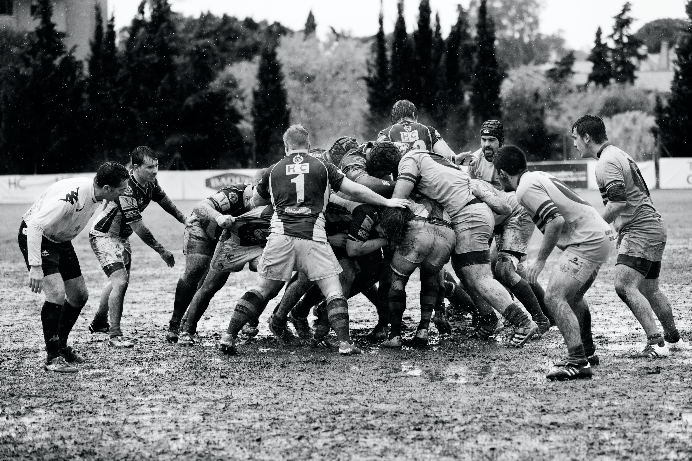

RUGBY-- union, commonly known simply as rugby, is a close-contact team sport that originated at Rugby School in the first half of the 19th century. One of the two codes of rugby football, it is based on running with the ball in hand. In its most common form, a game is played between two teams of 15 players each, using an oval-shaped ball on a rectangular field called a pitch. The field has H-shaped goalposts at both ends. Rugby union is a popular sport around the world, played by people of all genders, ages and sizes. In 2014, there were more than 6 million people playing worldwide, of whom 2.36 million were registered players. World Rugby, previously called the International Rugby Football Board (IRFB) and the International Rugby Board (IRB), has been the governing body for rugby union since 1886, and currently has 101 countries as full members and 18 associate members. In 1845, the first laws were written by students attending Rugby School; other significant events in the early development of rugby include the decision by Blackheath F.C. to leave The Football Association in 1863 and, in 1895, the split between rugby union and rugby league. Historically rugby union was an amateur sport, but in 1995 formal restrictions on payments to players were removed, making the game openly professional at the highest level for the first time.[4] Rugby union spread from the Home Nations of Great Britain and Ireland, with other early exponents of the sport including Australia, New Zealand, South Africa and France. The sport is followed primarily in the British Isles, France, Georgia, Oceania, Southern Africa, Argentina, and to a lesser extent Italy, Uruguay, the United States,[5][6][7] Canada, and Japan, its growth occurring during the expansion of the British Empire and through French proponents (Rugby Europe) in Europe. Countries that have adopted rugby union as their de facto national sport include Fiji, Georgia, Madagascar,[8] New Zealand, Samoa, Tonga, and Wales. International matches have taken place since 1871 when the first game was played between Scotland and England at Raeburn Place in Edinburgh. The Rugby World Cup, first held in 1987, is held every four years. The Six Nations Championship in Europe and The Rugby Championship in the Southern Hemisphere are other important international competitions that are held annually. National club and provincial competitions include the Premiership in England, the Top 14 in France, the Bunnings NPC in New Zealand, the League One in Japan and the Currie Cup in South Africa. Other transnational club competitions include the United Rugby Championship of club teams from Ireland, Italy, Scotland, South Africa and Wales, European Rugby Champions Cup in Europe, and Super Rugby Pacific in Australia, New Zealand and the Pacific Islands.

HISTORY-- football stems from the form of the game played at Rugby School, which former pupils then introduced to their universities.
Former Rugby School student Albert Pell is credited with having formed the first "football" team while a student at Cambridge University.[9] Major private schools each used different rules during this early period, with former pupils from Rugby and Eton attempting to carry their preferred rules through to their universities.[10] A significant event in the early development of rugby football was the production of a written set of rules at Rugby School in 1845,[11][12] followed by the Cambridge Rules that were drawn up in 1848.[13]
Formed in 1863, the national governing body The Football Association (FA) began codifying a set of universal football rules. These new rules specifically banned players from running with the ball in hand and also disallowed hacking (kicking players in the shins), both of which were legal and common tactics under the Rugby School's rules of the sport. In protest at the imposition of the new rules, the Blackheath Club left the FA[14][15] followed by several other clubs that also favoured the "Rugby Rules". Although these clubs decided to ban hacking soon afterwards, the split was permanent, and the FA's codified rules became known as "association football" whilst the clubs that had favoured the Rugby Rules formed the Rugby Football Union in 1871,[14] and their code became known as "rugby football".
In 1895, there was a major schism within rugby football in England in which numerous clubs from Northern England resigned from the RFU over the issue of reimbursing players for time lost from their workplaces. The split highlighted the social and class divisions in the sport in England. Although the rules of the game were not a factor in the split, the breakaway teams subsequently adopted some rule changes and this became the separate code of "rugby league". The RFU's code thereafter took on the name "rugby union" to differentiate it from rugby league,[16] but both versions of the sport are known simply as "rugby" throughout most of the world.[17]
World Cup and professionalism--
In 1987 the first Rugby World Cup was held in Australia and New Zealand, and the inaugural winners were New Zealand. The first World Cup Sevens tournament was held at Murrayfield in 1993. Rugby Sevens was introduced into the Commonwealth Games in 1998 and was added to the Olympic Games of 2016.[37] Both men and women's Sevens took place at the 2020 Olympic Games in Tokyo.[38]